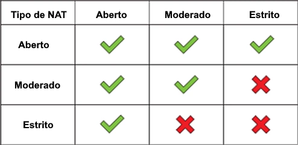
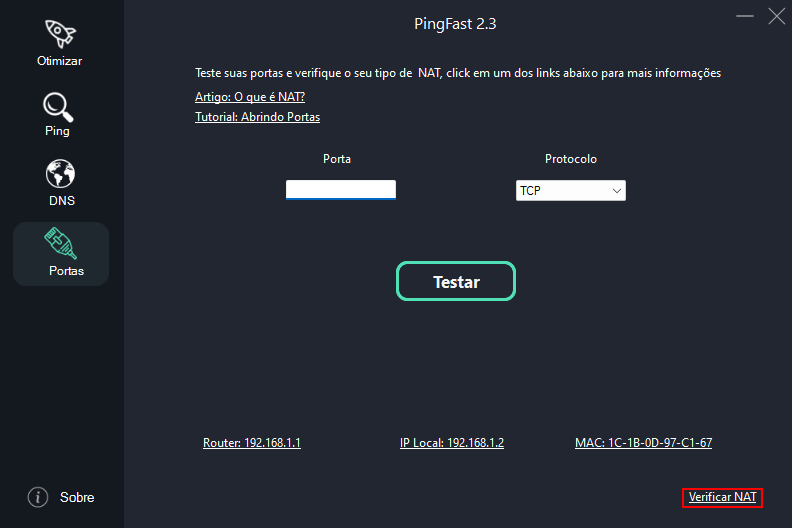
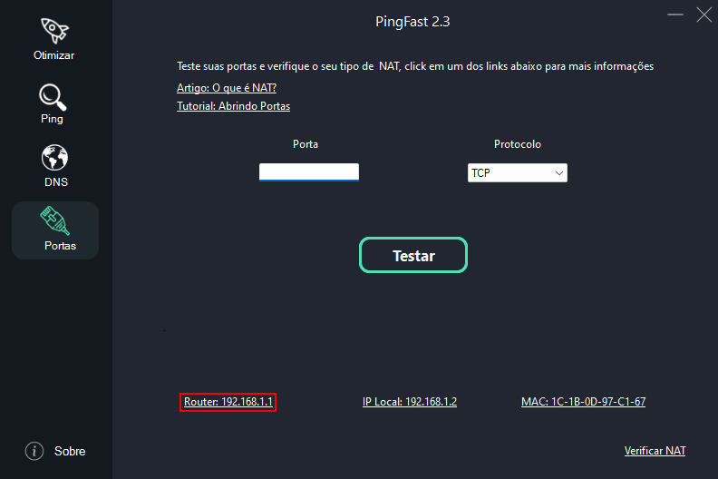
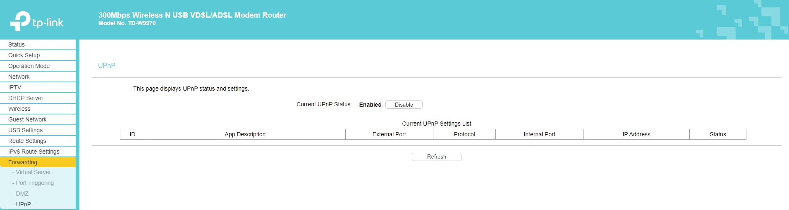

NAT
Network Address Translation ou "Tradução de endereço de rede" de maneira simples vai definir o tipo de conexão que você pode realizar com êxito

NAT Aberto/Tipo 1/Tipo A: Conexão aberta, que permite que qualquer conexão externa seja traduzida para a rede interna, o melhor tipo para jogos.
NAT Moderado/Tipo 2/Tipo B: A maioria das conexões externas são permitidas, mas antes, podem ser bloqueadas ou moduladas.
NAT Estrito/Tipo 3/Tipo C: O pior tipo para jogos e sinônimo de dor de cabeça.
Para Verificar em que tipo de NAT você está abra o PingFast e vá em Portas > Verificar NAT.

UPnP
Se você esta tendo problemas com NAT ativar o UPnP no seu router pode solucionar o problema.
Para ter acesso ao router abra o PingFast e vá em Portas e click no gateway do seu router.

Realize o login, se você não sabe o seu login e senha o site
RouterPasswords pode te ajudar.
A página do router não usa HTTPS, isso pode gerar um aviso no seu navegador, é normal, apenas ignore e prossiga, caso você não consiga chegar a tela de login do seu router consulte o seu provedor.

CGNAT
Devido ao aumento absurdo no número de dispositivos acessando a internet chegamos ao fim do número de IPV4 Validos (Reais),
enquanto o IPV6 não se torna o padrão mais usado como solução alternativa diversos provedores adotaram o CGNAT, basicamente um IP real é
dividido pra vários usuários desta rede, desta forma pode haver problemas de apontamento em programas e jogos P2P que exigem uma conexão direta.
O procedimento de abrir porta simplesmente não surge efeito caso a sua conexão esteja em CGNAT.
Para identificar o CGNAT verifique:
Se o seu tipo de NAT é Estrito
Se o seu IP de Internet (não confunda com o local) mostrado nos status do seu router diferem dos mostrados por sites como MeuIP
Se o seu IP de internet começa com 100, de acordo com as normas da Anatel os provedores tem que colocar 100 como faixa de IP inicial ao usarem CGNAT
Estou no CGNAT e agora?
Verifique se o IPV6 está devidamente ativo através deste
site, caso não esteja consulte o seu provedor e peça auxilio para ativar o IPV6 em seu router, caso não haja ipv6 na rede peça pra eles te removerem do CGNAT, a maioria dos provedores é bem resistente quanto a isso, mas eles acabam cedendo porque é necessário para algumas aplicações como o uso de câmeras IPs (ta ai uma boa desculpa pra você usar ao falar com o atendente), como dito antes os IPs validos estão escassos e a solução pra maioria das operadoras é te dar um IP publico (Real) então eles até podem te cobrar por isso, pra maioria dos casos eles não fazem esta cobrança a mais mas vai da sorte e do provedor de cada um.
Entenda que de acordo com as regras da Anatel o seu provedor tem o direito de te deixar em CGNAT mas isso não é o ideal,
eles já deveriam ter implementado IPV6 na rede, se você não conseguir resolver este problema o recomendado é se possível trocar de provedor.